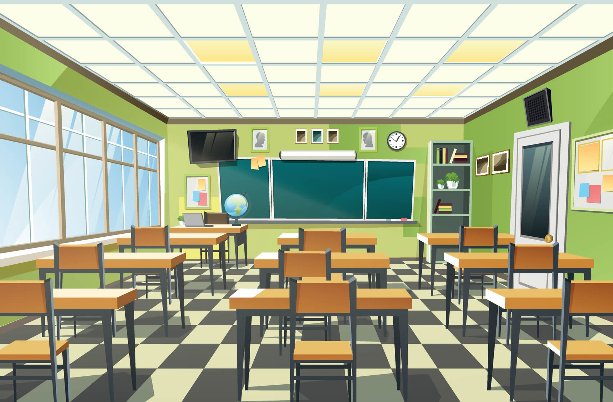

El sistema educativo como herramienta de dominación

El estado se sirve de diversos medios para mantener el control, para acabar con todo aquello que de una u otra manera atente contra sus intereses. Mediante la manipulación a través de diversos medios es que el estado intenta controlar al individuo.Para esto, al estado le conviene la existencia de seres sumisos, seres que no obran por su propia cuenta, seres obedientes que aceptan todo orden establecido y tienen temor a rebelarse. Y la manera más eficaz de llevar esto a cabo es impartiendo estas conductas a temprana edad, con el objetivo de que quede grabado en las mentes. ¿Y qué mejor lugar para lograr esto que la escuela?
Ya de pequeños nos acostumbran a competir con los demás. A través del método de premio y castigo, elogiando a los alumnos “buenos” y que hacen “bien” lo que les manda el profesor, y castigando y reprochando a los que simplemente no han hecho lo que se les exige o lo han hecho “mal”. En este último caso, los profesores suponen que a lo mejor el alumno es un poco torpe o “lento”, sin ponerse a pensar que quizá los que han hecho “mal” tal cosa es por las condiciones de presión a las que se ven sometidos. De este modo, vemos como ya en nuestros primeros años de adoctrinamiento se nos empuja y acostumbra a ir superando pequeñas pruebas que en cursos más altos toman el nombre de exámenes y son una forma de control y selección, a la que nos vemos sometidos ya desde la escuela, después en el liceo y llegando a la facultad, alcanza unos niveles altísimos de selección. Memorizar unos programas impuestos, sin detenernos a pensar si lo que estamos estudiando tiene algo de cierto o si nos será útil en algún momento de nuestra vida. Aprobar sin tener interés en lo que estudiamos y en porqué lo estudiamos, anulando de esta manera el interés por conocer, la investigación o la curiosidad.Nos crean dependencia de la autoridad. En este caso la autoridad es el profesor, que a su vez está condicionado por el sistema; el profesor dice lo que hay que aprender y cuándo hay que aprenderlo, el aprendizaje ni se califica, ni es tratado en términos de bueno o malo, sino en tanto a la fomentación de las capacidades individuales en plenitud, capacidades que no acaban nunca de desarrollarse. El aprender no está en función a intereses ajenos, ni dictados por nadie más que los individuos que se hacen a sí mismos…

Todos en la vida peleamos para alcanzar la libertad financiera, aqui unos consejos de como hacerlo

Los tiempos han cambiado y todo va avanzando pero el ejercito y la tecnologia lleva pasos mas adelante a el narcotrafico

Muchos se preguntan como es que puedo ser un hacker, aqui la respuesta

Tu inteligencia es lo que comes

¿Marte, tuvo agua en un pasado?

Deja de tener mentalidad de pobre y descubre como generar dinero de una vez!!

Pronto terminara el reinado de la presidencia de Donald Trump y estos son los posibles candidatos a tomar su lugar

El ejercito son quienes dan la vida por el pais y aqui te digo su armamento y entrenamiento
Programa un registrador de teclas en Python
¿Se puede aprender a ser hacker en poco tiempo?
Deja de tener mentalidad de pobre y descubre como generar dinero de una vez!!